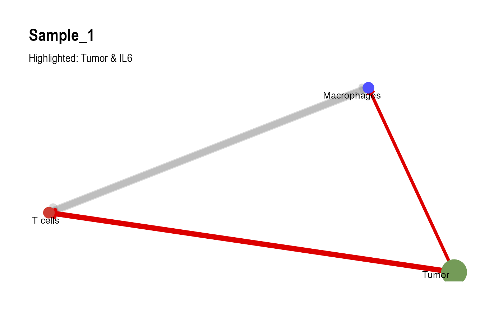

INTERACT Analysis with Simulated Data
simulated-data.RmdIntroduction
This vignette walks through a standard INTERACT workflow using
simulated data. We generate expression matrices for three cell
populations (T cells, Macrophages, and
Tumor) along with tumor somatic copy number variants (CNV)
and single-nucleotide variants (SNV), score intercellular communication
and train the Graph Autoencoder with RunInteract(), and
visualize the resulting signaling networks.
1. Load Libraries
# Load required packages
library(INTERACT)
library(dplyr)
library(igraph)
library(ggplot2)
library(ggraph)
library(visNetwork)2. Simulate Input Data
Cell Population Expression Matrices
Each cell population is represented as a numeric matrix with samples in rows and gene symbols in columns. Input expression matrices should contain non-negative, log-transformed values (such as \(\log_2(\text{CPM} + 1)\)).
# Define cohort size and gene symbols spanning ligands, receptors, and downstream pathways
n.samples = 100
genes = c(
"IL6", "IL6R", "IL6ST", "IFNG", "IFNGR1", "IFNGR2", "CD274", "PDCD1",
"CXCL12", "CXCR4", "TNF", "TNFRSF1A", "TGFB1", "TGFBR1", "TGFBR2",
"CCL2", "CCR2", "CXCL9", "CXCL10", "CXCR3", "ICAM1", "ITGAL", "ITGB2",
"STAT1", "STAT3", "JAK1", "JAK2", "IRF1", "SOCS3", "NFKB1", "NFKBIA",
"RELB", "SMAD2", "SMAD3", "JUN", "FOS", "MYC", "AKT1", "PIK3CA", "PTEN"
)
set.seed(42)
# Simulate log-scale expression matrices with 5 underlying signaling states
sample.states = sample(1:5, n.samples, replace = TRUE)
sim.expression = function(n, g, pop.offset) {
mat = matrix(runif(n * length(g), min = 1, max = 4), nrow = n, ncol = length(g))
for (i in seq_len(n)) {
active.idx = ((sample.states[i] + pop.offset) %% 5) * 8 + (1:8)
active.idx = active.idx[active.idx <= length(g)]
mat[i, active.idx] = mat[i, active.idx] + runif(length(active.idx), min = 4, max = 7)
}
rownames(mat) = paste0("Sample_", seq_len(n))
colnames(mat) = g
return(mat)
}
modalities = list(
`T cells` = sim.expression(n.samples, genes, pop.offset = 1),
`Macrophages` = sim.expression(n.samples, genes, pop.offset = 2),
`Tumor` = sim.expression(n.samples, genes, pop.offset = 3)
)Tumor Genomic Data (CNV and SNV)
Next, we simulate gene-level copy number and somatic mutation
matrices for the tumor population. Copy number values are centered at
2.0 (diploid), and somatic mutations are encoded as
1 (activating), -1 (inactivating), or
0 (wild type).
# Simulate continuous CNV matrix centered at diploid (2.0)
cnv = matrix(pmax(0.5, rnorm(n.samples * length(genes), mean = 2.0, sd = 0.5)), nrow = n.samples)
rownames(cnv) = paste0("Sample_", seq_len(n.samples))
colnames(cnv) = genes
# Simulate directional SNV matrix (-1 = inactivating, 0 = wild type, 1 = activating)
snv = matrix(
sample(c(-1, 0, 1), n.samples * length(genes), replace = TRUE, prob = c(0.05, 0.85, 0.10)),
nrow = n.samples
)
rownames(snv) = paste0("Sample_", seq_len(n.samples))
colnames(snv) = genes3. Run INTERACT
We pass the non-tumor expression list, tumor expression matrix, and
tumor genomic matrices to RunInteract(). By default,
RunInteract() queries the OmniPath intercellular database,
computes pathway and program weights, trains the multi-channel Graph
Autoencoder, and identifies sample clusters.
# Run the full INTERACT pipeline
results = RunInteract(
nontumor.matrices = modalities[c("T cells", "Macrophages")],
tumor.matrix = modalities[["Tumor"]],
snv.matrix = snv,
cnv.matrix = cnv,
n.cores = 1
)4. Visualize Signaling Networks
BuildGraph() constructs an igraph network
for a selected sample, which can then be plotted interactively with
PlotVisNetwork() or statically with
PlotGGraph().
# Construct sample-specific igraph object
graph = BuildGraph(
sample.id = "Sample_1",
interactions = results$interactions,
snv.matrix = snv,
cnv.matrix = cnv,
tumor.id = "Tumor",
top.n = 100
)
# Plot interactive cell-cell network
PlotVisNetwork(graph, top.n = 100)
# Plot static network highlighting Tumor and IL6 signaling
PlotGGraph(
graph = graph,
interactions = results$interactions,
highlight.cell = "Tumor",
highlight.gene = "IL6",
top.n = 100
)
5. Inspect Output Tables
RunInteract() returns a list containing the scored
interactions (interactions), latent GNN patient embeddings
(embeddings), cluster-level edge attributions
(edge.gradients), pipeline diagnostics
(diagnostics), network topology summaries
(topology.metrics), and precomputed viewer data
(precompute).
Scored Interactions
# View top rows of the scored interaction table
head(results$interactions[, c("sender", "receiver", "source_genesymbol", "target_genesymbol", "base.score", "final.score")])
#> # A tibble: 6 × 6
#> sender receiver source_genesymbol target_genesymbol base.score final.score
#> <chr> <chr> <chr> <chr> <dbl> <dbl>
#> 1 T cells T cells CCL2 CCR2 10.3 17.9
#> 2 T cells T cells CCR2 CXCR4 11.3 18.9
#> 3 T cells T cells CD274 PDCD1 6.29 12.9
#> 4 T cells T cells CXCL10 CXCR3 19.3 25.1
#> 5 T cells T cells CXCL12 CXCR4 6.45 14.1
#> 6 T cells T cells CXCL9 CXCR3 15.6 21.4Latent GNN Patient Embeddings
# View the first 6 columns of the GNN patient embeddings
head(results$embeddings[, 1:6])
#> sample GNN.Dim.1 GNN.Dim.2 GNN.Dim.3 GNN.Dim.4 GNN.Dim.5
#> 1 Sample_1 -0.8585395 -1.28409958 -0.05629319 -0.94254661 -2.041340
#> 2 Sample_10 -2.6443505 -0.07303593 -0.23229498 0.03063738 -1.506326
#> 3 Sample_100 -0.5893469 -1.59298384 0.58570170 0.18661919 -1.930055
#> 4 Sample_11 -0.1774327 -1.60129356 -0.15690905 -1.60658646 -2.466226
#> 5 Sample_12 -3.3368986 -2.50485682 0.53983575 0.79244292 -2.369353
#> 6 Sample_13 -3.0901995 -0.04711255 -0.05567962 0.61581105 -1.796258Input Signal Summary
# Inspect summary statistics for each input matrix
results$diagnostics$input.signal
#> # A tibble: 5 × 6
#> modality samples features pct.zero pct.low median.value
#> <chr> <int> <int> <dbl> <dbl> <dbl>
#> 1 T cells 100 40 0 69.7 2.89
#> 2 Macrophages 100 40 0 69.4 2.84
#> 3 Tumor 100 40 0 69.7 2.89
#> 4 SNV 100 40 85.1 91.1 0
#> 5 CNV 100 40 0 50.1 1.996. Launch the Interactive Shiny Viewer
To explore cohort-wide interactions, pathway activities, and patient
clusters interactively, pass the results object to
LaunchInteractApp():
# Launch interactive Shiny dashboard
LaunchInteractApp(results = results)